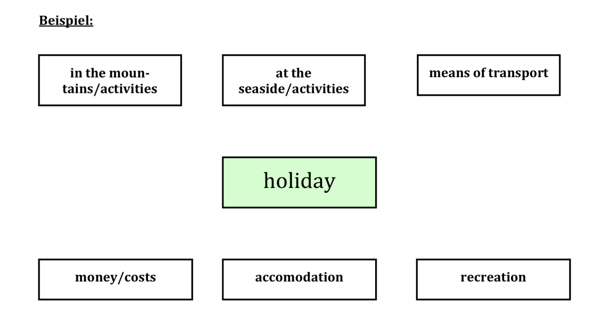

QA mündliche Prüfung - Englisch
Seite 1
1. Picture-based Talk
Der Ablauf:
- Du erhältst ein Bild zu einem Thema.
- Du hast 30 Sekunden Zeit, um dich mit dem Bild auseinanderzusetzen.
- Die Lehrkräfte stellen bildbezogene Fragen (zu den dargestellten Aspekten).
- Die Lehrkräfte stellen weiterführende Fragen (nicht mehr direkt zum Bildinhalt, aber vom Bild ausgehend).
- Wichtig: passende Phrasen verwenden (z. B. „Im Vordergrund ...“, „auf der linken Seite ...“, „In my opinion ...“).
- Sei wachsam: Prüferinnen und Prüfer geben oft unbeabsichtigt hilfreiche Tipps oder Vokabeln.
Vorbereitung:
- Diesen Prüfungsteil kannst du sehr gut mit einem Freund oder einer Freundin üben.
- Nehmt detailreiche Bilder, z. B. aus Zeitung oder Internet.
- Schreibt gemeinsam wichtige Begriffe auf, die ihr zur Bildbeschreibung benötigt.
- Beschreibt euch anschließend gegenseitig das Bild mit den gesammelten Vokabeln.
Beispiel:

Seite 2
2. Topic-based Talk
Der Ablauf:
- Du bekommst eine Mindmap mit einem Thema in der Mitte und sechs Unterthemen.
- Du hast eine kurze Vorbereitungszeit von 90 Sekunden.
- Du darfst dir Notizen machen.
- Du wählst aus sechs Teilaspekten insgesamt drei aus.
- Du solltest eine eigene Meinung zum Thema haben und möglichst frei sprechen.
Vorbereitung:
- Inhalte der Units sicher beherrschen und Mindmaps zu Themenbereichen strukturieren.
- Laut sprechen und in englischer Sprache berichten.
- 3 bis 5 Minuten über ein Thema sprechen üben. Das ist länger, als man denkt.
- Einige besondere beziehungsweise themenspezifische Vokabeln gezielt lernen.
Beispielsätze:
My topic is holidays, and I would like to talk about the subtopics means of transport, money and costs, and recreation.
First of all ... Let us go on with ... What I want to add is ...
What is also important ... You should always think about ... This subtopic leads me to ...
When talking about holidays, you should also mention spending time abroad.
In my opinion ... In my last holiday, I went to ... My dream holiday would be ...
Mögliche Themen:
Life in a big city, School, Free time, Australia, India, New Zealand, Part-time jobs, Mobile phones, South Africa, Sports, English language

Seite 3
3. Interpreting
Der Ablauf:
- Du sollst zeigen, dass du in Alltagssituationen aus dem Englischen ins Deutsche und aus dem Deutschen ins Englische dolmetschen kannst.
- Zuerst wird dir die Situation in englischer Sprache kurz mündlich vorgestellt.
- Die Lehrkräfte tragen die Gesprächsteile abwechselnd vor.
- Wenn du etwas nicht verstanden hast, frage höflich nach, damit dein Dialogpartner den Satz wiederholen kann.
Tipps:
- Gut zuhören und inhaltlich genau übersetzen.
- Wenn du eine Vokabel nicht kennst, umschreibe das Wort auf Englisch.
Beispiel: